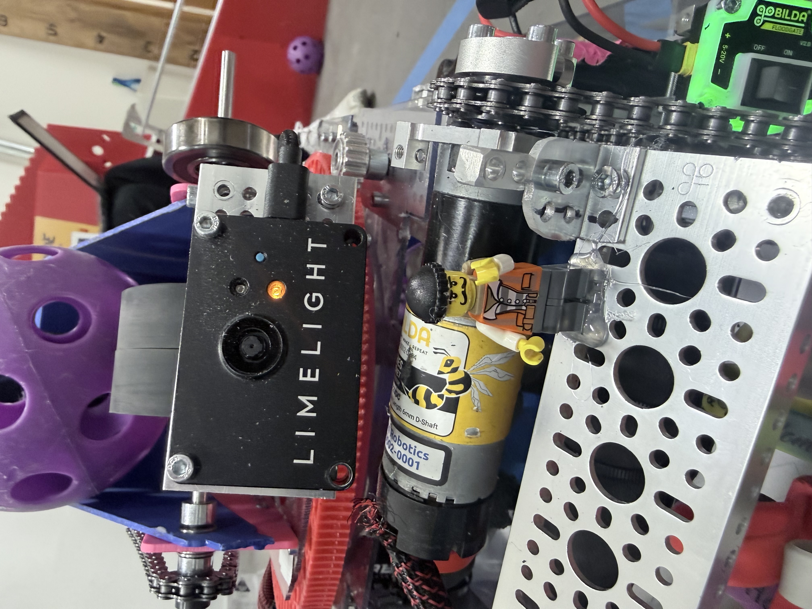
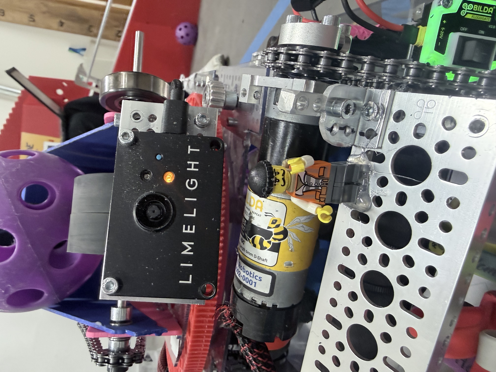

Meet the Team
Davis - Builder
Kade - Coder/Driver
Eli - 3D Printer / CAD Programmer
Michael - Driver
Grace - Builder
Jordan - All-Around
Caitlin - Outreach
Our Robot
Pierre is awesome. He is built on a custom straffer chassis that has been cut to size for our needs. He has a wrist band intake and a center plate to sort balls.To shoot the balls he has a custom 6000 rpm motor attached to a custom hood to adjust the angle and speed of the shot.
 

Game Strategy & Autonomous
Our autonomous for close net begins with firing the preload balls, then grabbing the first rack of balls, firing grabing the second rack, and firing before parking off the line. For the far auto, we fire the preload balls, grab the farthest rack of balls, fire, and attempt to grab 3 balls from the human player zone, firing those before parking off the line. Note: all autos can be adjusted to fit our alliance partners' auto.
In Teleop, our strategy is built on cycle efficiency and adaptability:
- Driving: Michael and Kade work together to adapt to field congestion with pirres auto aiming turret; they can fire from anywhere on the field. They use our intake to sort and grab balls on the field.
- End-Game Focus:Our Robot is about 17.5 inches square with a large gap in the intake. So we can achieve a full park; however, because of our scoring efficiency, we usually take a partial park and let our alliance member get the full park
Outreach
Catie (Caitlin) leads our outreach efforts. This year, we have participated in multiple learning days. During one of those learning days, we gave a presentation about 3D printing. We taught everyone who attended how to use TinkerCAD and turn their designs into real-life prototypes. This was a great opportunity to reach out to other teams and give/recieve advice..
This year, we had the chance to showcase our robot at a Rocket Science camp at the Bismarck Public Library. Not only did we demonstrate how our robot worked, but we also brought the LEGO Spike Kits for the kids to explore. This helped spread our love for FIRST and introduce it to some younger kids.
Gracious Professionalism
Inspiring Minds Ricochet Robotics embodies Gracious Professionalism by respecting other teams, mentors, and volunteers. We love to collaborate, mentor, and encourage others while focusing on learning and growth. Gracious Professionalism is our favorite FIRST value because it teaches everyone that while we can compete with each other, we can also support and encourage each other simultaneously.
We celebrate successes, learn from mistakes, and maintain a positive attitude both on and off the field. We may not be perfect, but we have learned how to put our minds together to produce new ideas. While we do disagree sometimes, we always find a way around it. We can disagree while still working together successfully. Our team collaborates well and is always willing to give all ideas a try.